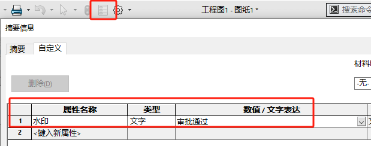
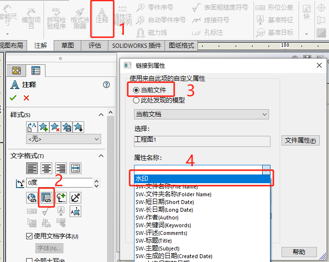
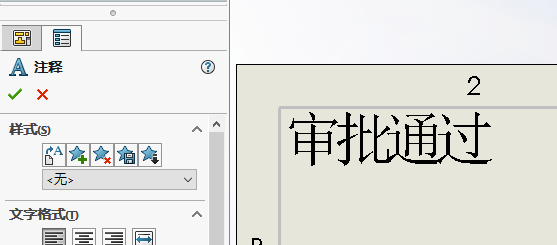
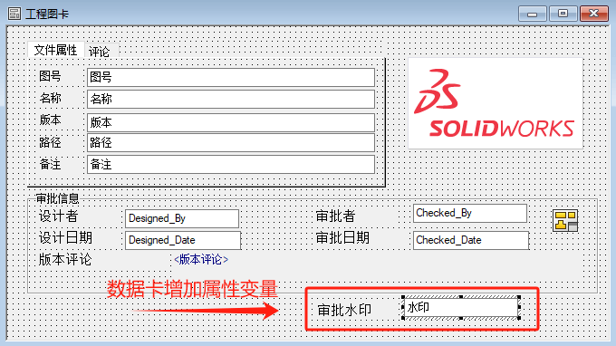
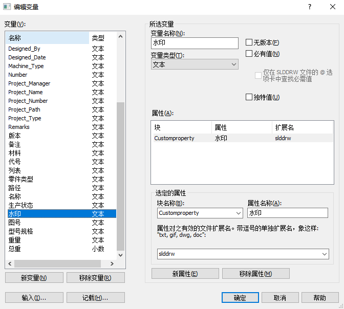
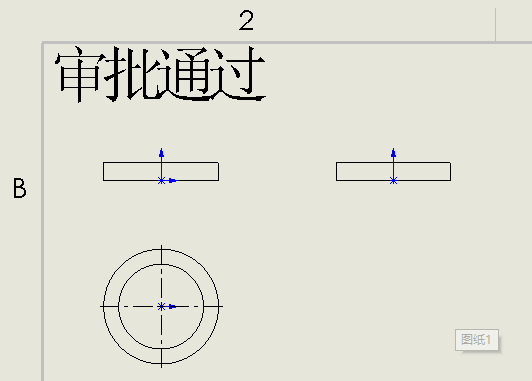
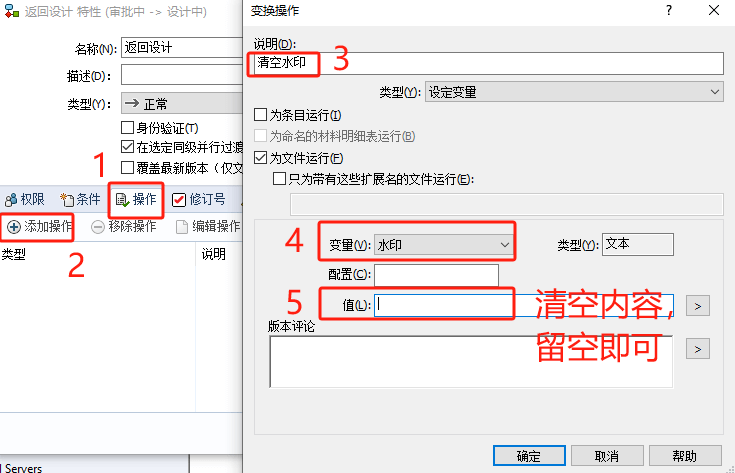

PDM添加审批水印
可以设置一个审批的“工作流程”来添加工程图文件中“水印变量“。通过将变量链接到工程图的水印自定义属性中，并以文本注解的发生显示。
（建议将水印注解添加到【绘图模板.drwdot】和【图纸格式.slddrt】中）
图纸模板设置
在你的工程图模板中创建一个名为“水印”的自定义属性，并给它一个值(例如“审批通过”)。
编辑绘图表格式，并插入一个链接到“水印”自定义属性($PRP:注释链接)
在工程图中，把注释放置到合适的位置。
保存更新后的绘图模板。
PDM变量设置
编辑绘图文件数据卡，插入一个名为“水印”的新变量。将变量链接到自定义slddrw文件扩展名的“水印”属性。
 编辑工作流程并找到您希望更新水印的过渡，例如“已通过”
默认工作流中的“审批”转换。添加一个“设置变量”的过渡动作和你想要的
在值字段中显示水印。如果希望清除现有的水印值，请将value字段保留为空
当您使用更新的绘图模板创建新绘图时，现在应该显示水印注释。预览也会显示水印。
当你驳回发布时，清空水印。
